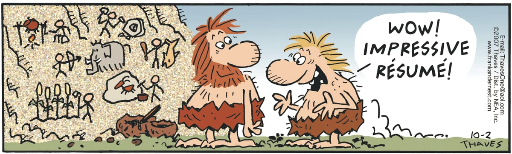

Integrated Master of Science in Physics (Dual-Degree) July 2017 -- May 2022
Indian Institute of Technology Roorkee , Roorkee, Uttrakhand, India
Master's Thesis: Equation of State based on phenomenological relativistic mean field theory for single and double fluid Neutron Stars
Thesis Supervisor: Prof. Paramasivan Arumugam, Department of Physics, IIT Roorkee
Visiting Scientist, International Space Science Institute, Bern, Switzerland. Mar-Apr 2023
ThinkSwiss Research Scholar, University of Bern, Switzerland. Sep-Nov 2022
Associate research fellow at the Indian Pulsar Timing Array Consortium May 2021 - Dec 2022
Secretary at the Physics and Astronomy Club-IIT Roorkee July 2019 - April 2021
Forum on Lunar Gravitational-Wave Observation Oct 2022
HPC Workshop on Radio Astronomy Data Analysis in the SKA Era Mar 2022
Second Chennai Symposium on Gravitation and Cosmology - Online Feb 2022
Online IR Astronomy School organised by SOFIA-NASA Feb 2022
TIFR-ICTS CSGP Online Meeting Dec 2021
GBO and Arecibo Online Single Dish School Sep 2021
IPTA Online Student Week Jun 2021
Programming languages - Python, C, C++, FORTRAN
Operating systems - Linux (Ubuntu and CentOS) and Windows
Softwares - PSRCHIVE, DSPSR, TEMPO2, Aladin, Stellarium, Adobe Illustrator
Web Development - HTML5-CSS, JS
English: TOEFL 2022 scores: 98/120 with 25(R)-27(L)-24(S)-22(W)
Teaching Assistant, Course - 'Introduction to compact objects' (Masters level course) at University of Bern, Switzerland. Mar-Apr 2023
Tutor for high school students at 'Prerna Cell' - National Service Scheme, in Roorkee and nearby villages, Uttarakhand, India. 2018
Private Tutor for middle school students for Jawahar Navodaya Vidyalaya Entrance Exam, in villages nearby Indore and Ujjian, India. 2013-2015
'Is Betelgeuse going to be a supernova soon?' Feb 2020
I presented a brief review of the Betelgeuse's dimming in late 2019 which suspected its untimely supernova explosion in a student-colloquium organised by Indian Physics Association-Roorkee Chapter. (Role: Speaker)
Workshop on Stellarium and Basic Astronomy Dec 2020
One-day workshop organised by Student Technical Council - IIT Roorkee. I guided undergraduate students about the basics of observational astronomy and using the Stellarium open-source planetarium software. (Role: Host and Instructor)
Mysteries of Universe-1 and 2 2020-2021
An online colloquium series jointly organised by PaAC-IITR, IPA-Roorkee, ILS-IITR and Prof. Aalok Misra, IIT Roorkee. (Role: Co-organiser)
Astro with ARIES lecture series 2020-2021
An online colloquium series jointly organised by PaAC-IITR, IPA-Roorkee, ILS-IITR and ARIES, Nainital. (Role: Co-organiser)
IIT Kanpur's Hyperion-case study challenge Oct 2021
I participated in a team of 3, secured first position in this national level case-study challenge. The problem-statements were related to galactic dark-matter density.
9th Inter-IIT Tech-Meet, IIT Mandi Mar 2021
I participated in a team of 8 and won a silver medal representing the institution. We developed a web-based catalog for observations made through the ISRO's AstroSat.
